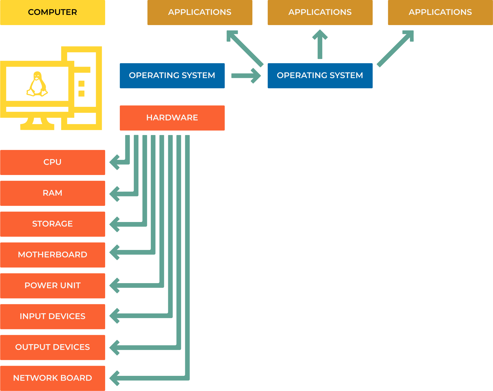

1.0 Computer and Network Basics
Computer
A computer is composed of several key components, both hardware, and software, which allow it to function and perform a wide array of tasks.
{kind=link}
Hardware
Central Processing Unit (CPU): Often referred to as the “brain” of the computer, the CPU executes the instructions provided by the computer’s software.
Memory (RAM and ROM): RAM (Random Access Memory) is a type of volatile memory used for the temporary storage of data that is being actively used or processed by the CPU. ROM (Read-Only Memory) is non-volatile memory used to store firmware or software that boots the computer and performs diagnostics.
Storage: Non-volatile storage devices, like hard drives (HDD), solid-state drives (SSD), or flash drives, store data, and software applications.
Motherboard: This is the main circuit board that connects all the computer’s components and allows them to communicate with each other.
Power Supply: Converts electrical power from the outlet into usable power for the other components within the computer.
Input Devices: Devices like a keyboard, mouse, microphone, or touchscreen allow users to interact with the computer.
Output Devices: Devices like a monitor, printer, or speaker produce human-perceivable output (visual, printed, or audio).
Graphics Processing Unit (GPU): A specialized electronic circuit designed to rapidly manipulate and alter memory to accelerate the creation of images in a frame buffer intended for output to a display.
Software
Operating System (OS): This is the primary software that manages all the hardware and other software on the computer. Examples include Microsoft Windows, macOS, Linux, and Android.
Application Software: These are the programs that perform specific tasks. Examples include web browsers, word processors, games, and databases.
Drivers: These are special pieces of software that allow the operating system to interact with the hardware components.
Firmware: This is a type of software that is closely related to hardware, often stored in ROM or flash memory, and is used to control the hardware.
Network
A network, in the context of computing, is a collection of interconnected devices such as computers, servers, mainframes, network devices, peripherals, or smart IoT devices that are linked together to facilitate communication and data exchange. Networks can be categorized by their scope:
Local Area Network (LAN): A network that connects devices in a relatively small area such as a home, office, or a group of buildings.
Wide Area Network (WAN): A network that covers a large geographical area, and is often composed of several LANs. The best-known example of a WAN is the Internet.
Personal Area Network (PAN): A network designed for personal use within a range of a few meters, often using wireless technology.
Metropolitan Area Network (MAN): A network that covers a larger geographic area, such as a city or campus.
Networking can be done using a variety of methods such as Ethernet (wired) or Wi-Fi (wireless).
The Internet is a global network of networks. It’s a WAN that spans the entire globe. It uses the standard Internet protocol suite (TCP/IP) to link devices worldwide. The Internet carries a vast array of information resources and services, such as the interlinked hypertext documents and applications of the World Wide Web (WWW), electronic mail, telephony, and file sharing. Its infrastructure is made up of many different networks from all around the world, managed by different organizations, companies, governments, and individuals.
The Internet allows computers and other devices to share information over great distances. It’s the infrastructure that enables activities like online gaming, social networking, financial transactions, data transfer, email, and much more. The World Wide Web, which is often mistaken for the Internet, is a service that operates over the Internet.
Simplified data flow:
User’s Device (Browser) -> Local Network (Router) -> ISP -> Internet Backbone -> Server (Website)
{kind=link}
IP Address vs MAC Address
An IP address is a unique identifier assigned to each device connected to a network. It’s used to identify the device and communicate with it. An IP address is a logical address that can be changed. It’s assigned by the network administrator or ISP (Internet Service Provider).
An MAC address is a unique identifier assigned to each network interface controller (NIC) connected to a network. It’s used to identify the device and communicate with it. An MAC address is a physical address that cannot be changed(but can be spoofed). It’s assigned by the manufacturer.
IP v4 classes
RFC 1918 name |
IP address range |
Number of addresses |
Largest CIDR block (subnet mask) |
Host ID size |
Mask bits |
Classful description |
|---|---|---|---|---|---|---|
24-bit block |
10.0.0.0 - 10.255.255.255 |
16777216 |
10.0.0.0/8 (255.0.0.0) |
24 bits |
8 bits |
single class A network |
20-bit block |
172.16.0.0 - 172.31.255.255 |
1048576 |
172.16.0.0/12 (255.240.0.0) |
20 bits |
12 bits |
16 contiguous class B networks |
16-bit block |
192.168.0.0 - 192.168.255.255 |
65536 |
192.168.0.0/16 (255.255.0.0) |
16 bits |
16 bits |
256 contiguous class C networks |
There is another special IP address range called the loopback address range. It’s used to establish a connection to the same computer. The loopback address range is localhost (127.0.0.1).
IP v4 vs IP v6
IP v4 is the fourth version of the Internet Protocol (IP). It’s the most widely used protocol in use today. It’s a connectionless protocol that operates on a best-effort delivery model, in that it does not guarantee delivery, nor does it assure proper sequencing or avoidance of duplicate delivery. These aspects, including data integrity, are addressed by an upper layer transport protocol, such as the Transmission Control Protocol (TCP).
Example:
8.8.8.8
00001000.00001000.00001000.00001000
IP v6 is the sixth version of the Internet Protocol (IP). It’s the most recent version of the Internet Protocol. It’s designed to succeed Internet Protocol version 4 (IPv4). It’s a connectionless protocol that operates on a best-effort delivery model, in that it does not guarantee delivery, nor does it assure proper sequencing or avoidance of duplicate delivery. These aspects, including data integrity, are addressed by an upper layer transport protocol, such as the Transmission Control Protocol (TCP).
Example:
2001:0db8:0000:0000:1234:0ace:6006:001e